Sketches
After finalizing our requirements with the MoSCoW list, and getting a better understanding of our users with the personas and storyboards, we proceeded to make sketches for our application. While making these, we often used a lot of the principles stated by Mark Basinger, 2008. Baskinger, M., 2008. Pencils before pixels: a primer in hand-generated sketching. Interactions. SIGCHI ACM Special Interest Group on Computer-Human Interaction, 15. We came up with two sketches, and presented them both to our client OWidgets.
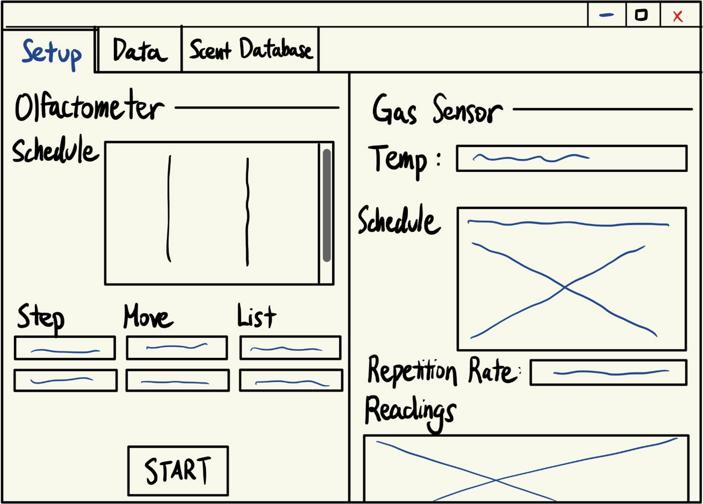
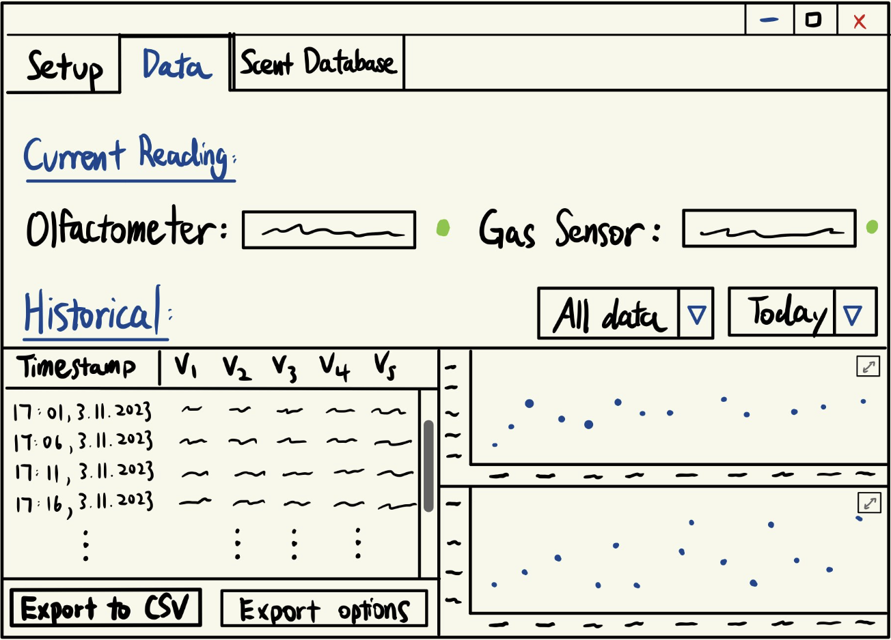
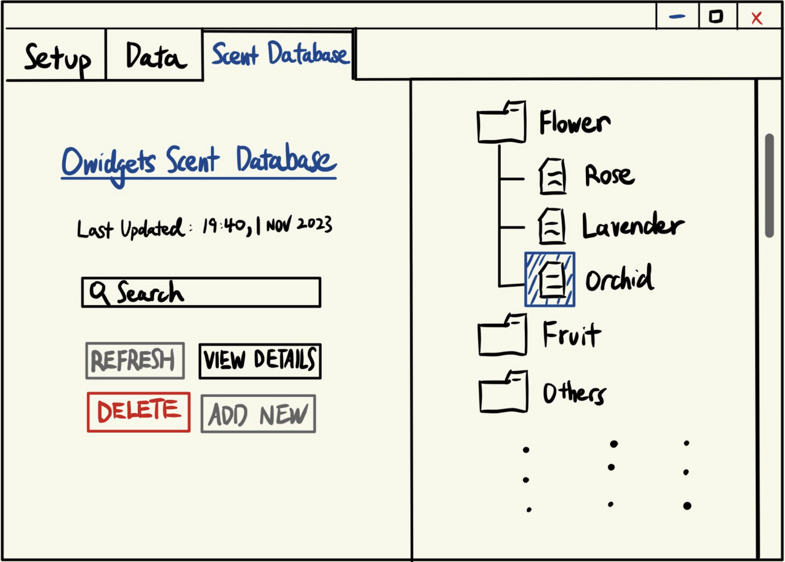
Sketch 1
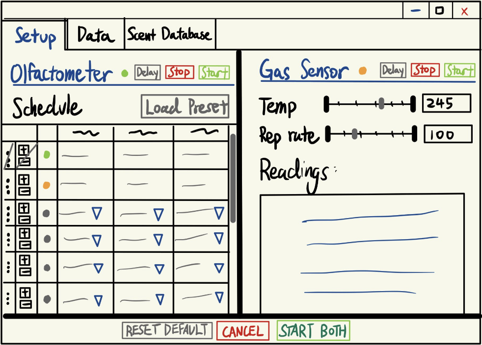
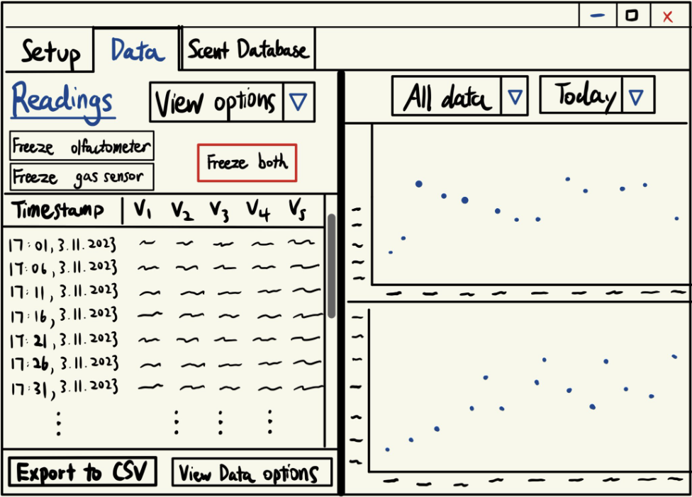
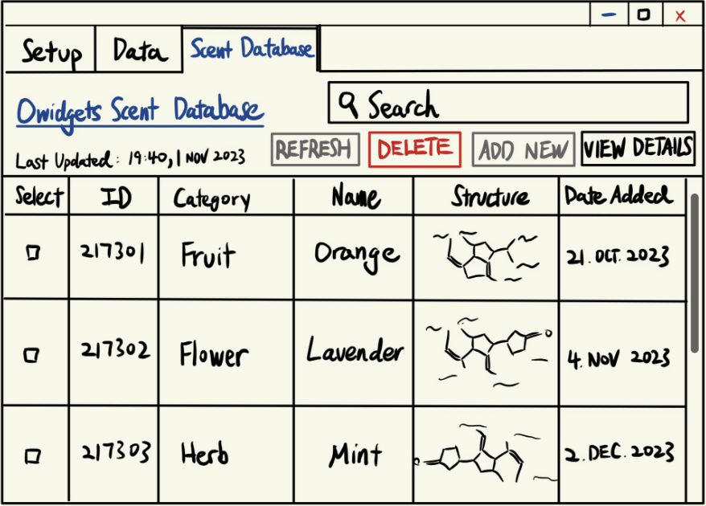
Sketch 2
After arranging a meeting and presenting our sketches, we took feedback from them in order to construct our first prototype. The highlights of the feedback were:- Gas sensor will generate multiple readings at different temperatures at each time instance. Consider an array of lists.
- Current reading on sketch 1 is not necessary, should be incorporated into historical data like sketch 2.
- Need an option to read schedule file to control olfactometer.
- Need a list of channels and activation times for olfactometer.
- Setup page should not contain readings.
- Start/stop could be on main page.
Prototypes
Prototype 1
Taking our sketches, requirements, and user feedback into consideration, we designed our first protoype using Figma.
We have a green dot to indicate run finished, yellow for in progress, grey for upcoming. Rows can only be modified if they are upcoming. Also, we added a temperature array instead of slide bar. If duration is left blank, it measures from start to end by default.
Having completed our first prototype, we arranged a meeting with our clients to present the prototype. The feedback we received was:
In addition to receiving user feedback, we applied triangulation with heuristics evaluation for a more well-rounded assessment of the prototype as foundation for second iteration.
Prototype 2
Taking into account the feedback and heuristics evaluation, we designed our second prototype using Figma. A link to this can be found here.
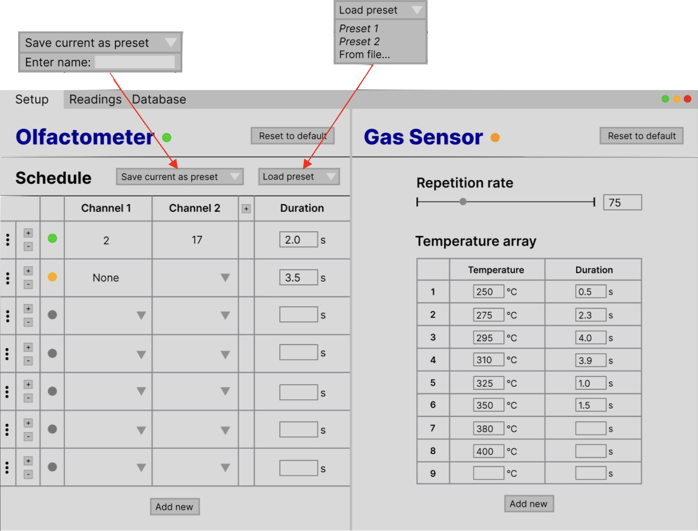
We also made the freeze and start buttons the same to reduce cluttering, and added interactive graphs - scroll down to increase time axis scale and scroll up to decrease time axis scale.
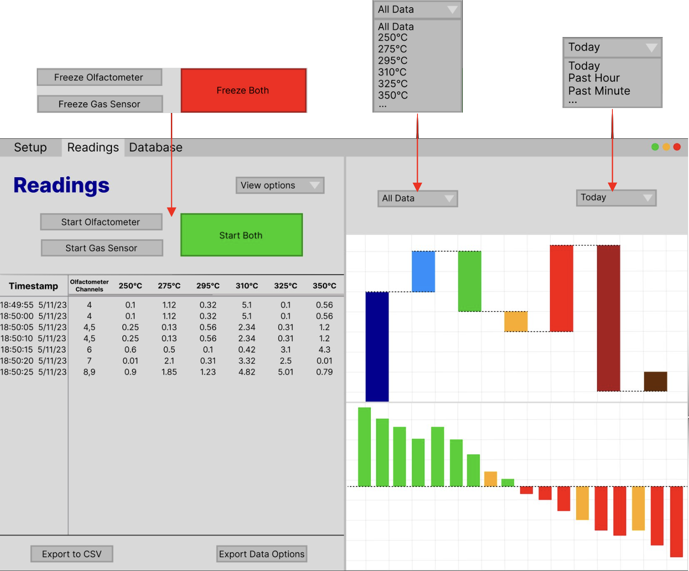
For the database screen, you can scroll down to view more, or use search bar to find specific scents.
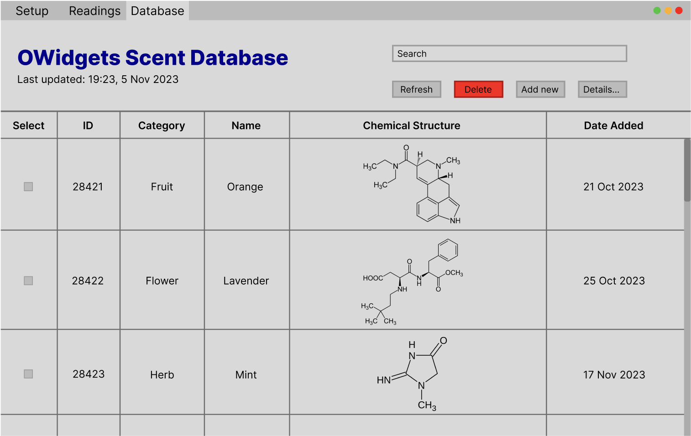
Prototype 1 EvaluationHaving completed our first prototype, we arranged a meeting with our clients to present the prototype. The feedback we received was:
Setup Page:
- 10 heater temperatures can be set for the gas sensor.
- Heating time can be set in milliseconds.
- The repetition rate is set by the sensor hardware. There are only a couple of modes - low / ultra-low power modes.
- The data could be stored as the readings are acquired, rather than exported after the sequence has finished.
- There needs to be an option to enter a file path to store data.
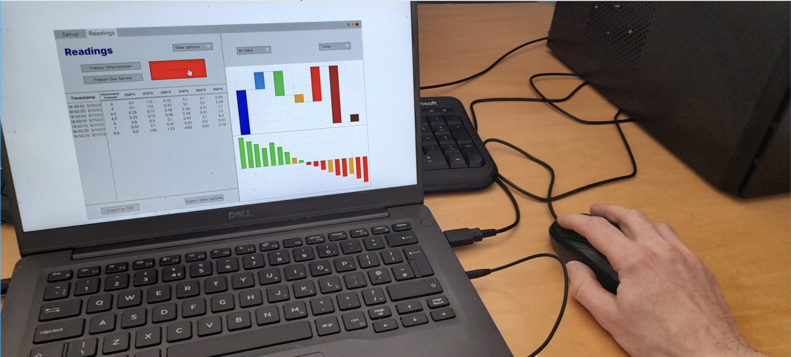
User (hardware engineer) interacting with the prototype, using ”Wizard of Oz” technique (Sharp, Rogers and Preece, 2019)
| Heuristic | Problem | Solution | Severity |
|---|---|---|---|
| Recognition rather than recall | The purpose of colored dots in the schedule table on the setup page was unclear. | Added header "Status" to clarify what the column indicates. | 3 |
| Ensuring system language matches real-world convention | On the setup page, “Reset to default” for olfactometer schedule really performs “Clear all”, leading to confusion. | Amended button name to “Clear all”. | 2 |
| Maintaining consistency | Buttons to add new columns and rows to tables in the setup page had different labels and positions, leading to confusion. | Incorporated all “add new” buttons as extensions of the tables for better intuition and aesthetics. | 1 |
| Recognition rather than recall | "Refresh" button on database page was not near the "Last updated" text, making it less intuitive. | Shifted "Last updated" text to be next to the "Refresh" button. | 2 |
| Aesthetic and Minimalist Design | Scroll bar for readings table was not obvious. | Increased size of scroll bar. | 2 |
Prototype 2
Taking into account the feedback and heuristics evaluation, we designed our second prototype using Figma. A link to this can be found here.
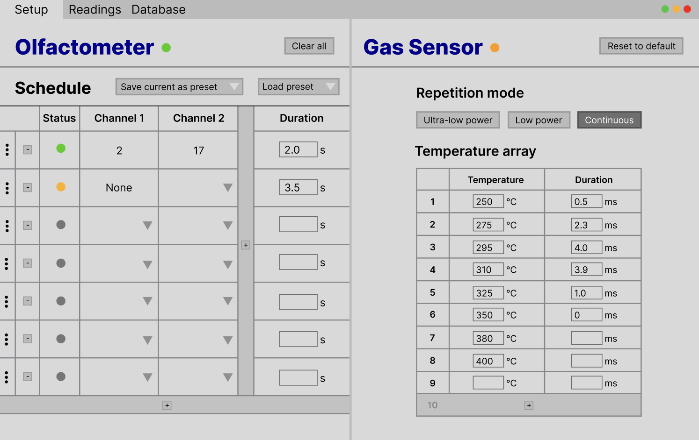
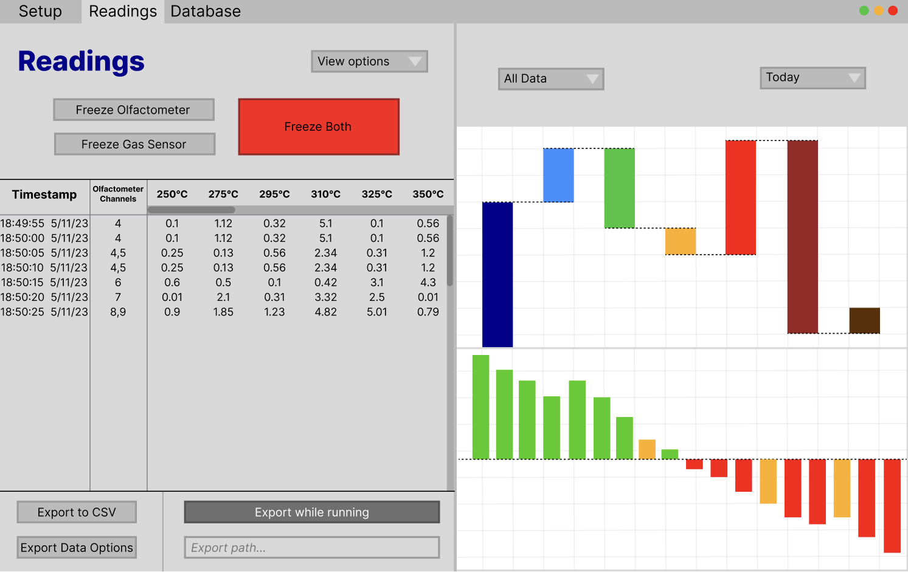
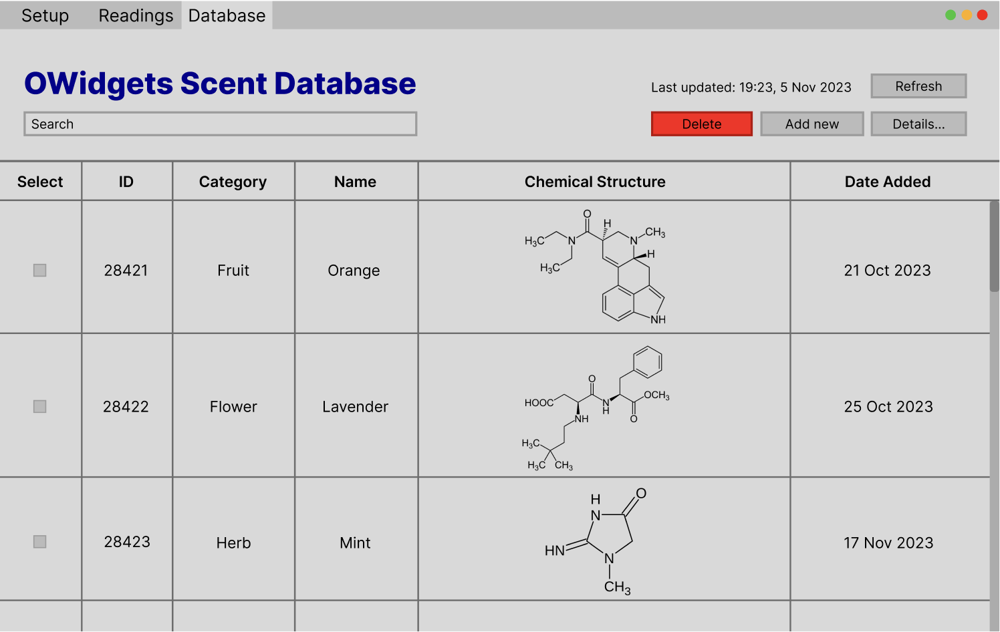